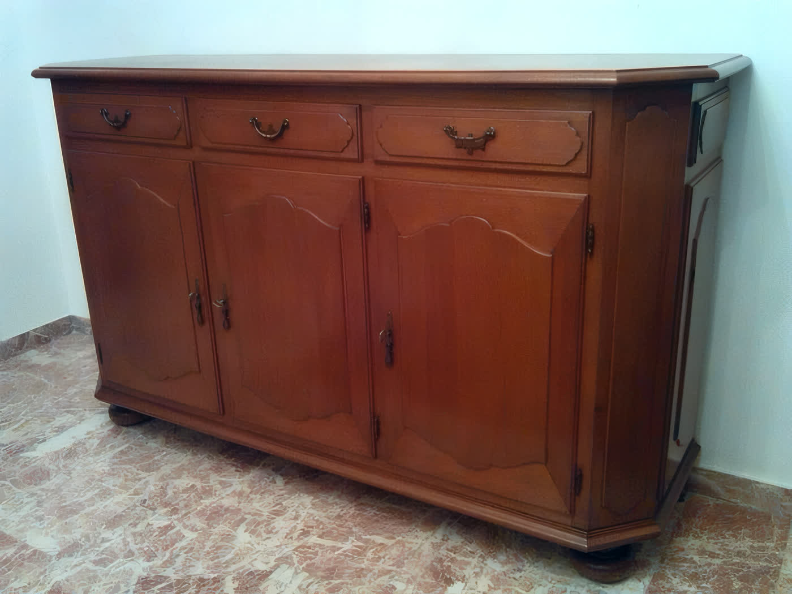
Mobili d'epoca
Restauro conservativo di mobili di varie epoche: struttura, superfici, finitura a gommalacca.
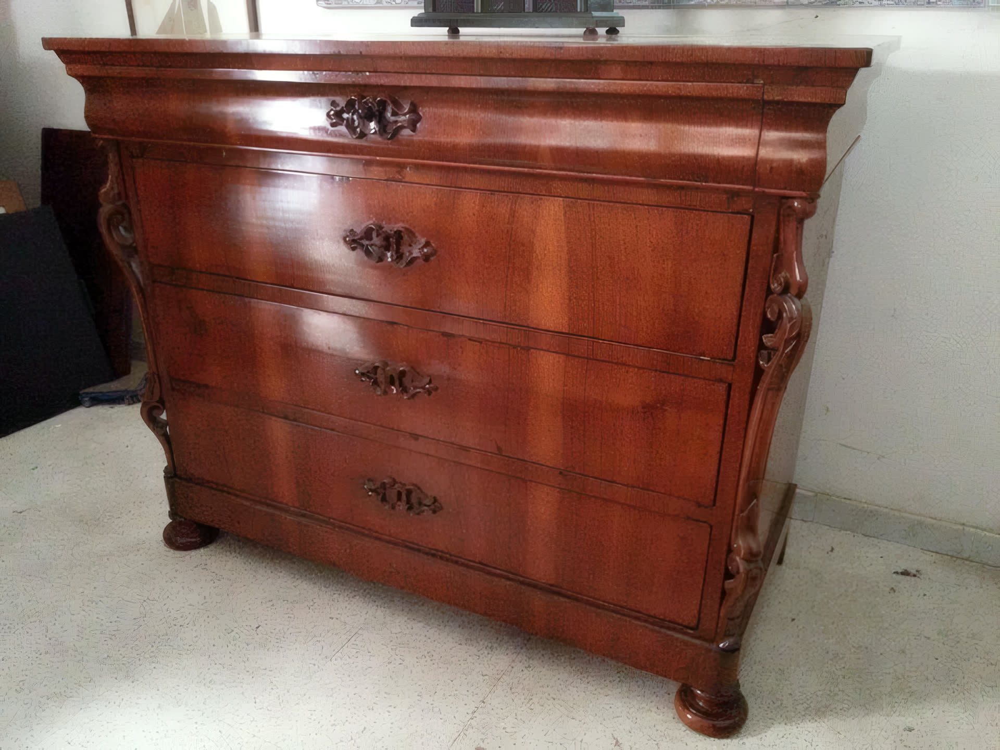
Bottega di restauro · Buccinasco
Bottega di Restauro Mobili Antichi
Dai primi anni '90, tra le cascine di Gudo Gambaredo, Antonio Santoro riporta alla vita mobili, icone e oggetti d'epoca: falegnameria, lucidatura a tampone con gommalacca e rispetto della patina antica.
Un mobile antico non si rimette a nuovo. Si riporta a com'era.
Prodotti naturali, recupero strutturale di falegnameria e una lucidatura che non cancella la storia del legno: il lavoro si giudica da vicino, in laboratorio.
La bottega
Antonio Santoro nasce perito tecnico industriale e comincia in un'azienda meccanica. Poi torna al mestiere di casa, quello che in famiglia si fa dai tempi del nonno: il restauro.
Dai primi anni '90 la sua bottega lavora a Gudo Gambaredo, frazione di campagna alle porte di Buccinasco: un laboratorio vero, con i banchi, la gommalacca e il legno da ascoltare, che si visita su appuntamento.
Per impagliature e tappezzerie la bottega si affianca a impagliatori e artigiani di fiducia: paglia di Vienna, paglie naturali, corda di canapa, cordoncino.
«Prima si capisce il mobile, poi si toccano gli attrezzi.»
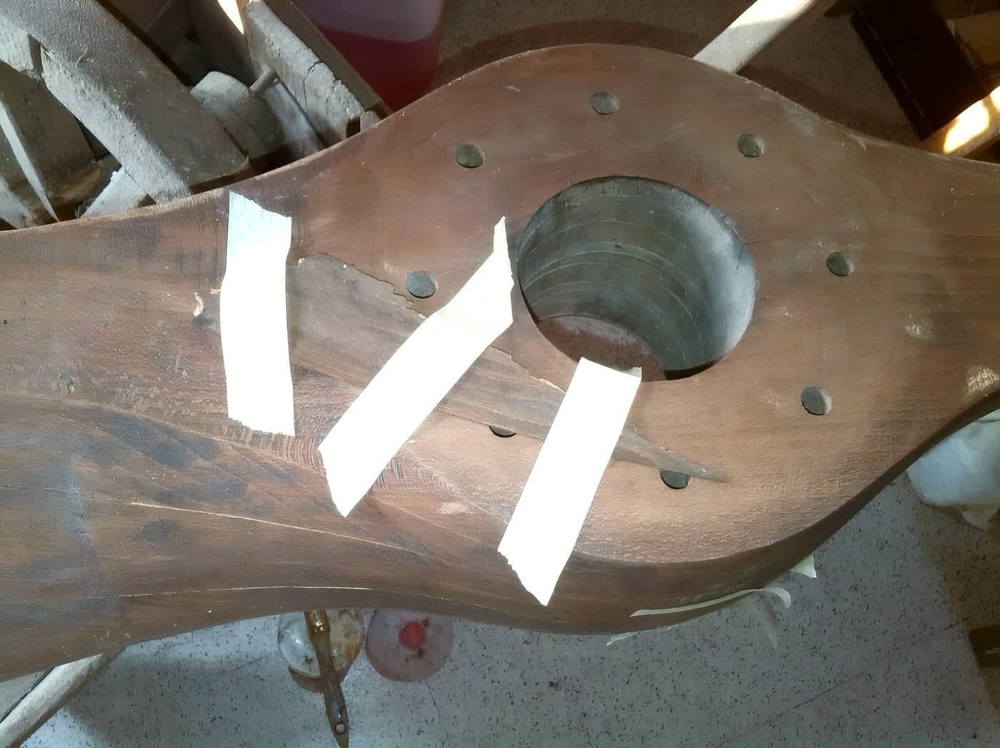
L'argomento migliore
Una panca a specchiera intagliata, arrivata in laboratorio segnata dagli anni. Nessun trucco: due fotografie della bottega, prima e dopo il restauro.
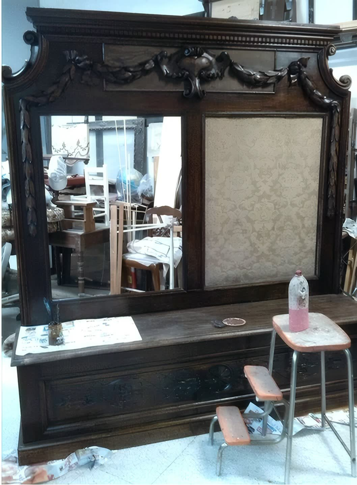
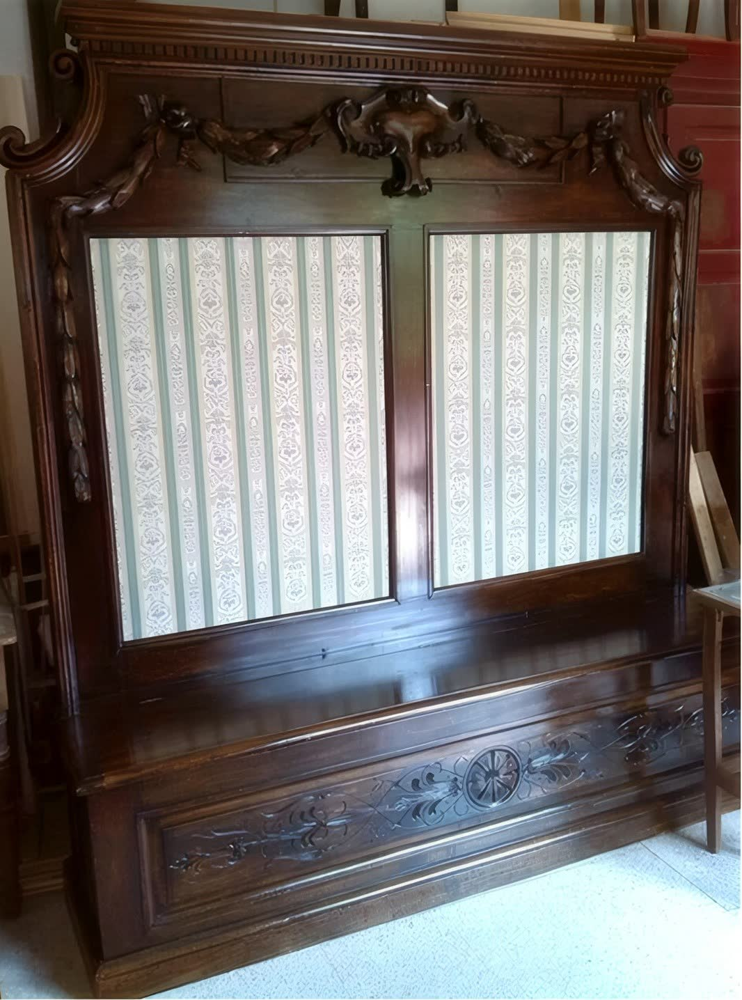
Cosa è successo nel mezzo: recupero strutturale di falegnameria, stuccatura, trattamento antitarlo, tappezzerie rifatte e lucidatura a tampone con gommalacca. La patina non si cancella: si rispetta.
Il metodo
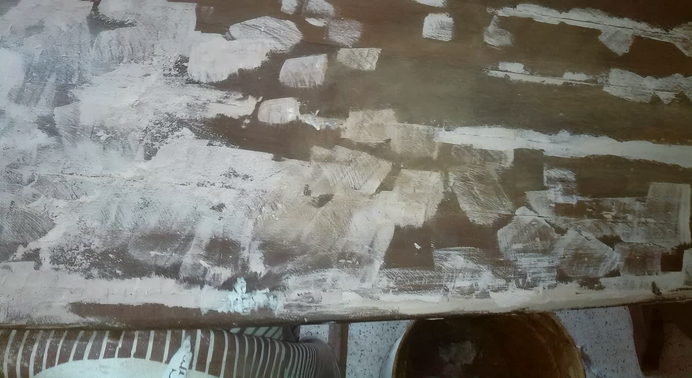
Di norma si lavora in laboratorio. Per i pezzi che non si possono muovere, come portoni e balaustre, il restauro si fa sul posto.
Il laboratorio
Mobili e oggetti lignei di epoche e tipologie diverse, dai pezzi di famiglia alle opere intagliate.

Restauro conservativo di mobili di varie epoche: struttura, superfici, finitura a gommalacca.
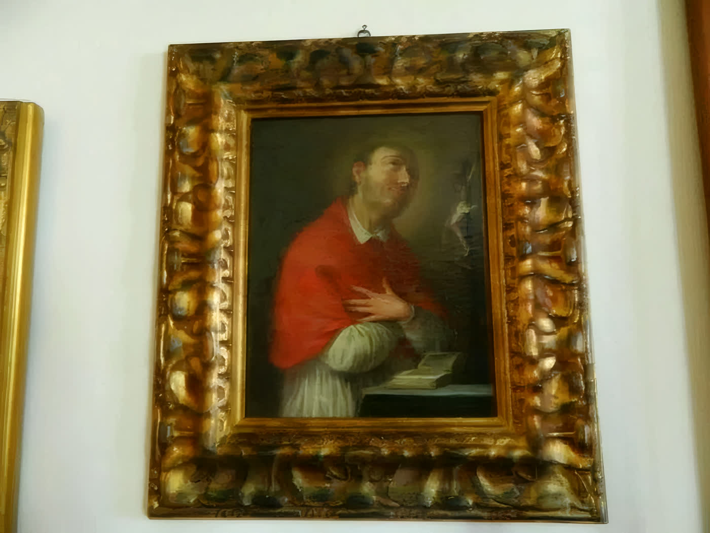
Intagli, dorature e cornici: il legno lavorato che chiede mani pazienti.
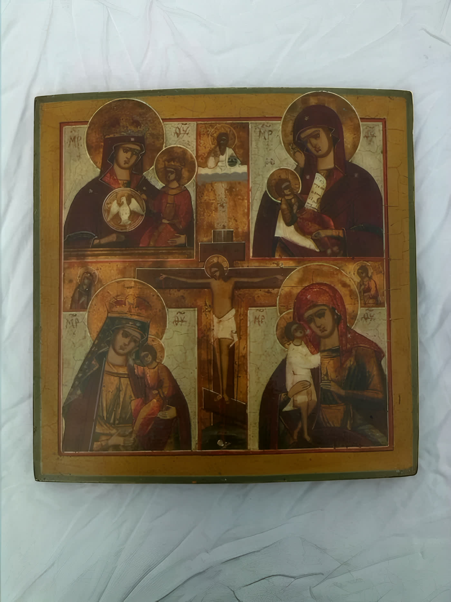
Restauro di icone e oggetti di arte sacra, nel rispetto dei materiali originali.
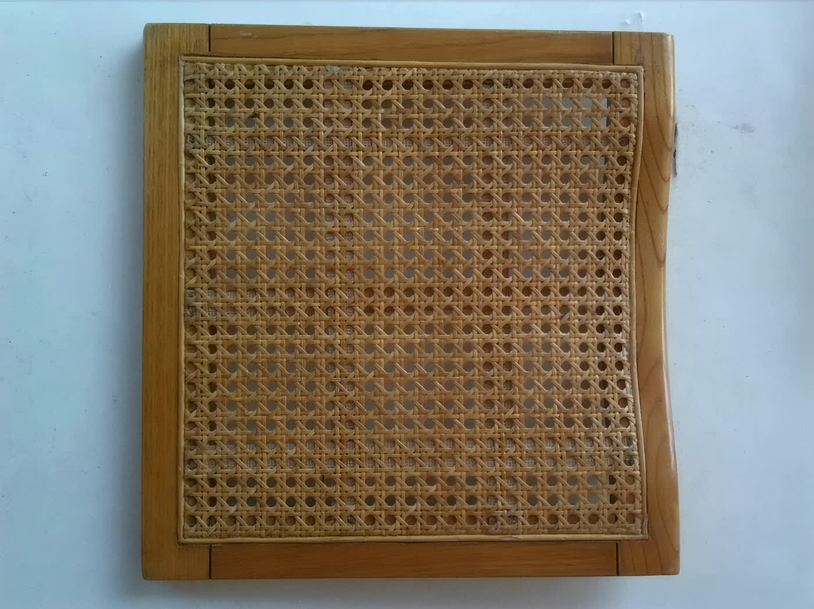
Paglia di Vienna, paglie naturali, corda di canapa, PVC sintetico e cordoncino.
La vetrina
Mobili antichi e riproduzioni, quadri, stampe, libri antichi, icone originali d'epoca e oggettistica: pezzi scelti, in vendita direttamente in bottega.
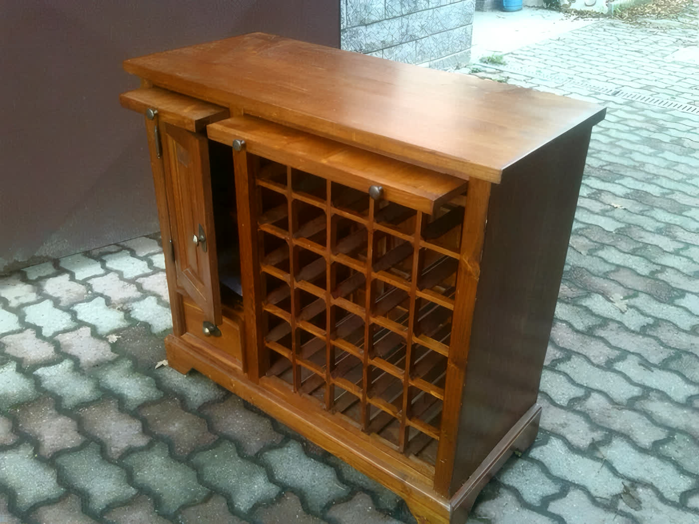
Mobili antichi, riproduzioni e complementi d'arredo.
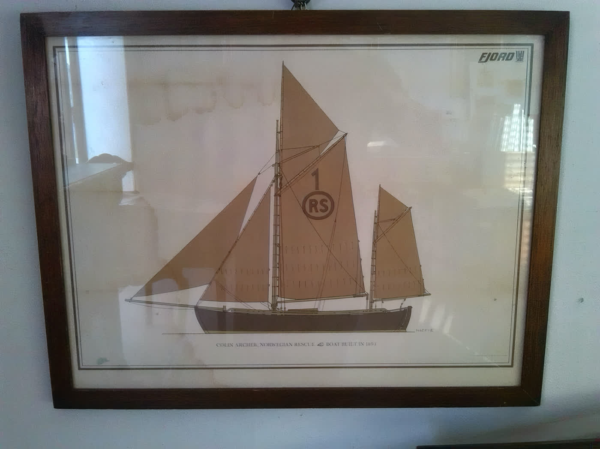
Dipinti, stampe, acqueforti e serigrafie.
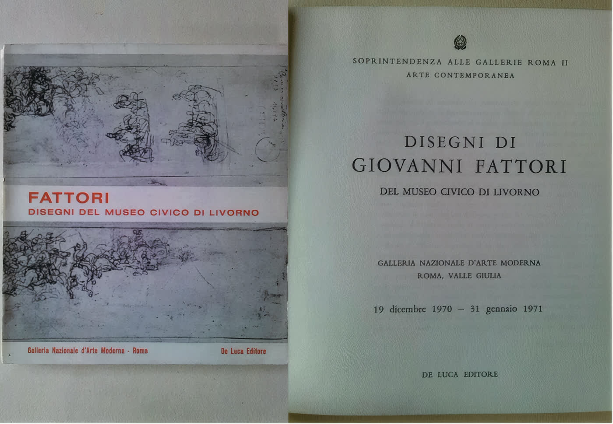
Volumi e cataloghi d'arte da collezione.
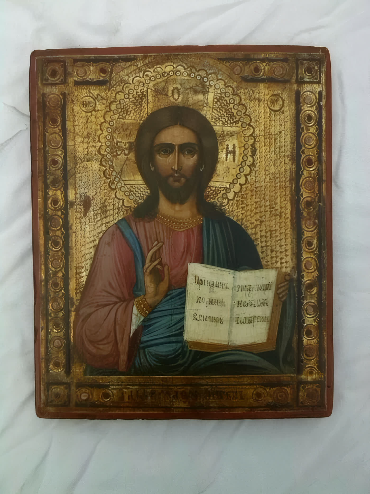
Icone d'epoca, con il loro vissuto.
Cerchi un pezzo in uno stile preciso? Su richiesta la bottega riproduce mobili in stile, su misura.
I servizi
Fuori dalla bottega
La bottega espone al mercatino artigiano di Pavia, in zona castello: l'occasione giusta per conoscersi dal vivo.
La galleria
Contatti
Niente orari di negozio: si fissa una visita con una telefonata, e il tempo in laboratorio è tutto per il tuo pezzo.
339 4298828Visite solo su appuntamento
Località Molinetto, Gudo Gambaredo
20090 Buccinasco (MI)
Da Assago o Buccinasco verso Gudo Gambaredo, poi in direzione della cascina Bazzanella: il laboratorio è dopo 800 metri.